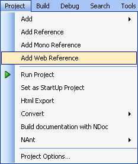

From the Add Web Reference dialog box you can browse for web services and then add a web reference to your project.
To open the Add Web Reference dialog box, select Add Web Reference from the Project menu.

Alternatively, in the Project Explorer, right click the project name and select Add Web Reference.

When the Add Web Reference dialog box is opened the cursor is in the URL text box. Once the URL to the web service has been typed in the web service can be viewed by pressing the Enter key or clicking the Go button.
The Back button shows the previously displayed web page.
The Forward button shows the web page that was displayed before you clicked the Back button.
The Refresh button  reloads the web page currently
being displayed.
reloads the web page currently
being displayed.
The Stop button stops the currently displayed web page from loading.
The Go button displays the web page at the URL entered at the top of the dialog box.
The WSDL tab contains a web browser and displays the web page at the URL currently being viewed.
Shows you the list of available web services and the web service methods.
The Reference Name text box allows you to choose a name for the web reference. This name is what will appear under Web References in the Project Explorer.
The Namespace text box allows you to choose the namespace that the web proxy class will have.
Adds the web reference to the project and closes the dialog box.
Closes the dialog box without adding the web reference to the project.